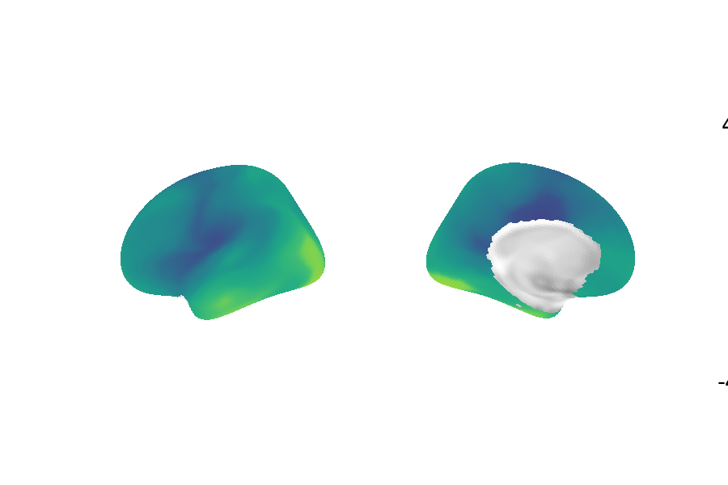

Note
Go to the end to download the full example code
Getting Started
Quick introduction to brain maps and eigenmodes
Patterns on the cortical surface or in the subcortex (“brain maps”) more often than not express with smoothness - spatial autocorrelation. Accounting for this in statistical testing of the associations between or the influence that one brain map has on another is a non-trivial problem. More recently, methods that account for smoothness have been developed, but these carry their own issues (see our paper for an in-depth discussion on this topic).
Eigenmodes of a surface encode all pairwise (auto)correlations (i.e., smoothness). The reason for this is too maths heavy for a quick intro, but suffice to say that this has been discussed many times by people smarter than the people who came up with this method (see References).
Eigenstrapping offers a solution by leveraging this fact, and another property of eigenmodes: they are orthogonal. By taking random rotations of them, one can create new brain maps with the same smoothness but randomized topology. The steps below will help you get started and build your own surrogate maps.

- 
Downloading data from https://files.osf.io/v1/resources/mabr9/providers/osfstorage/65668144aa3a762736d6ab2b ...
...done. (3 seconds, 0 min)
Downloading data from https://files.osf.io/v1/resources/mabr9/providers/osfstorage/6566812ff0b8e24c97a9d80c ...
Downloaded 1212416 of 260655724 bytes (0.5%, 3.6min remaining)
Downloaded 25198592 of 260655724 bytes (9.7%, 18.7s remaining)
Downloaded 53223424 of 260655724 bytes (20.4%, 11.8s remaining)
Downloaded 81723392 of 260655724 bytes (31.4%, 8.8s remaining)
Downloaded 110288896 of 260655724 bytes (42.3%, 6.9s remaining)
Downloaded 138354688 of 260655724 bytes (53.1%, 5.3s remaining)
Downloaded 166109184 of 260655724 bytes (63.7%, 4.0s remaining)
Downloaded 193167360 of 260655724 bytes (74.1%, 2.8s remaining)
Downloaded 222101504 of 260655724 bytes (85.2%, 1.6s remaining)
Downloaded 250658816 of 260655724 bytes (96.2%, 0.4s remaining) ...done. (13 seconds, 0 min)
Downloading data from https://files.osf.io/v1/resources/mabr9/providers/osfstorage/6566812479d42829de3e864c ...
...done. (2 seconds, 0 min)
Downloading data from https://files.osf.io/v1/resources/mabr9/providers/osfstorage/65668144932b9f48b2760891 ...
...done. (3 seconds, 0 min)
Downloading data from https://files.osf.io/v1/resources/mabr9/providers/osfstorage/6566812ef0b8e24c97a9d80a ...
Downloaded 1228800 of 261166559 bytes (0.5%, 3.5min remaining)
Downloaded 25214976 of 261166559 bytes (9.7%, 18.7s remaining)
Downloaded 52912128 of 261166559 bytes (20.3%, 11.8s remaining)
Downloaded 79265792 of 261166559 bytes (30.4%, 9.2s remaining)
Downloaded 106242048 of 261166559 bytes (40.7%, 7.3s remaining)
Downloaded 134553600 of 261166559 bytes (51.5%, 5.7s remaining)
Downloaded 163684352 of 261166559 bytes (62.7%, 4.2s remaining)
Downloaded 191946752 of 261166559 bytes (73.5%, 2.9s remaining)
Downloaded 219815936 of 261166559 bytes (84.2%, 1.7s remaining)
Downloaded 243138560 of 261166559 bytes (93.1%, 0.7s remaining) ...done. (13 seconds, 0 min)
Downloading data from https://files.osf.io/v1/resources/mabr9/providers/osfstorage/65668124932b9f48b276087f ...
...done. (3 seconds, 0 min)
/home/runner/eigenstrapping-data/surfaces/space-fsaverage_den-10k_hemi-lh_pial.surf.gii
(10242,)
(10242, 1000)
(1000,)
Downloading data from https://files.osf.io/v1/resources/4mw3a/providers/osfstorage/60b684ab9096b7021b63cf6b ...
...done. (3 seconds, 0 min)
Extracting data from /home/runner/neuromaps-data/e38b96d96273aa064c22296eda1e5688/fsaverage10k.tar.gz..... done.
No surface given, expecting precomputed eigenvalues and eigenmodes
IMPORTANT: EIGENMODES MUST BE TRUNCATED AT FIRST NON-ZERO MODE FOR THIS FUNCTION TO WORK
(<Figure size 900x600 with 3 Axes>, <Axes3D: >)
# Input data types
# ================
# ``eigenstrapping`` requires a few inputs:
# * A brain map, i.e., a one-dimensional vector, and either:
# * A surface mesh, i.e., a set of vertices and face indices
# * A set of eigenmodes and corresponding eigenvalues
# For the first run, we will load all of these files from the example dataset,
# but let's assume that these files have already been generated.
# ``eigenstrapping`` can handle a variety of inputs:
# * Delimited `*.txt` files
# * Neuroimaging files such as `*.nii`, `*.gii`, or `*scalar.gii`
# * Data and memory-mapped distance matrices written to `*.npy` files
# * Numpy arrays and array-like objects
# First run
# =========
# The package comes with example surfaces (and their eigenmodes) and cortical gradient data
# from Margulies' 2015 paper (see :ref:`References <references>`). Let's start by importing the data (this may take
# a few moments):
from eigenstrapping.datasets import load_surface_examples
surf_lh, surf_rh, data_lh, data_rh, emodes_lh, emodes_rh, evals_lh, evals_rh = load_surface_examples(with_surface=True)
print(surf_lh)
print(data_lh.shape)
print(emodes_lh.shape)
print(evals_lh.shape)
#Now let's plot the data on the surface.
from eigenstrapping.plotting import csplot
csplot(data_lh, 'fsaverage')
#Now let's make a surrogate brain map and plot it on the surface.
from eigenstrapping import SurfaceEigenstrapping
eigen = SurfaceEigenstrapping(
data=data_lh,
emodes=emodes_lh,
evals=evals_lh,
num_modes=100,
resample=True,
)
surr = eigen.generate()
csplot(surr, 'fsaverage')
Total running time of the script: (0 minutes 47.683 seconds)